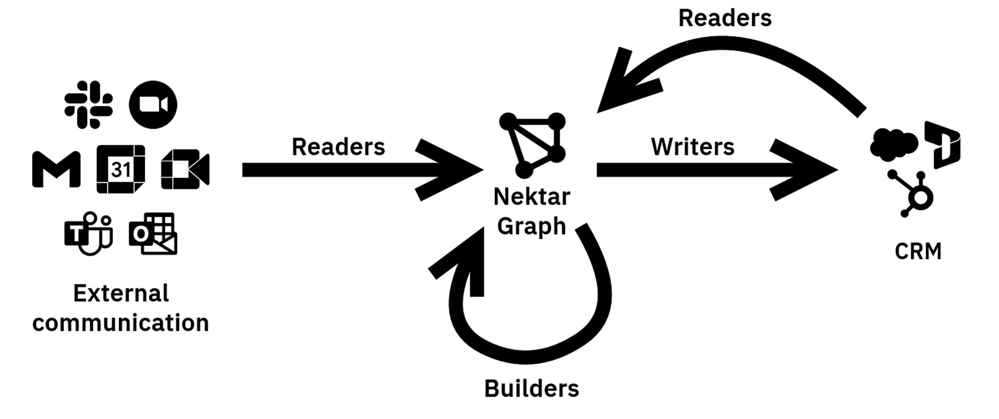

Overview

The Nektar data capture system contains a central database called the Nektar Graph, and three kinds of background services that operate on it: Readers, Builders and Writers.
Nektar Graph
The Nektar Graph is Nektar's representation of reality, containing the activities, opportunities, companies and people from all your tools, as well as the relationships between these objects. Each Nektar customer has a separate, siloed graph.
Readers
Readers are periodic jobs that use APIs to bring in data from external systems like Google Workspace (Gmail, Google Calendar), Microsoft 365 (Mail and Calendar), Zoom, Salesforce, and other integrations. Data that pass read and write rules are added to the graph.
Builders
Builders process the Nektar Graph, performing de-duplication, extracting insights from unstructured text, inferring relationships and applying your business rules. Two key components of builders are graph inference and data transform.
Writers
These are periodic jobs that push changes into Salesforce, updating it to match the reality in your Nektar Graph.
Self-healing
Whenever Nektar gets new data from any of your systems, it re-runs all the above steps, keeping your Graph accurate and comprehensive. Nektar does this near real-time, even when your graph grows to hundreds of millions of objects.
This gives Nektar its self-healing capability.